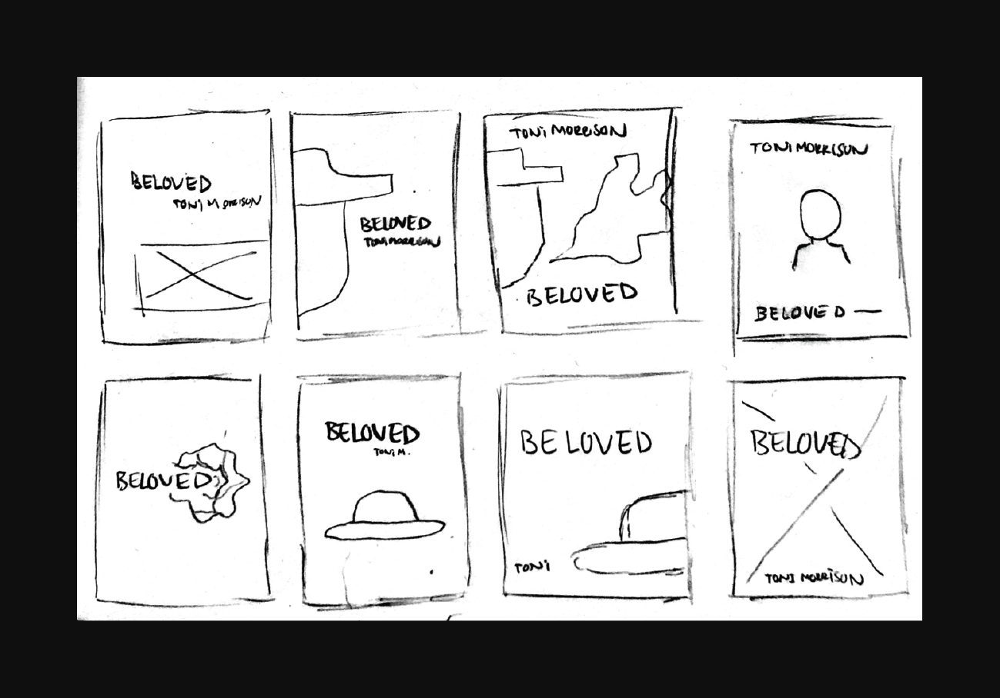
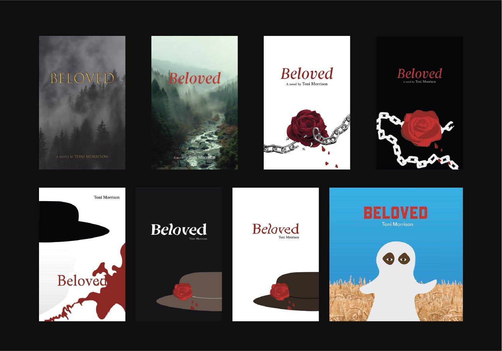
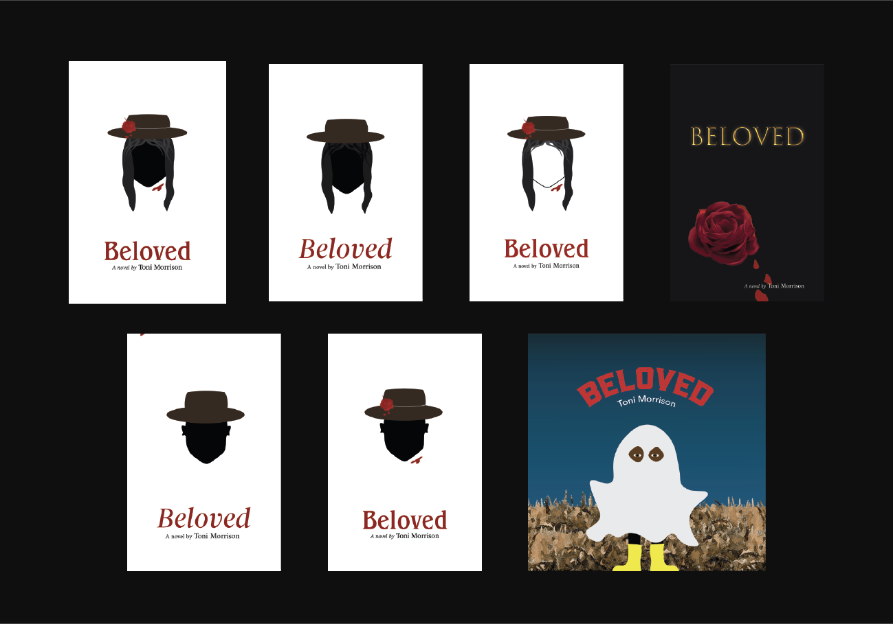
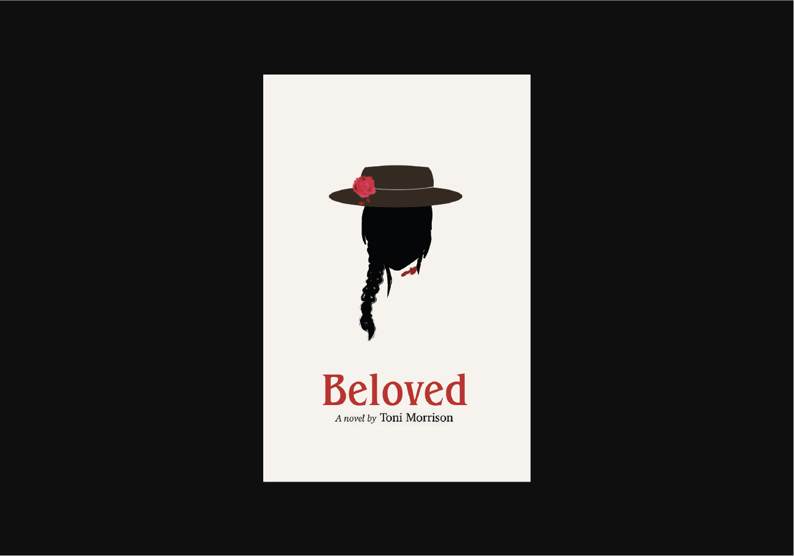
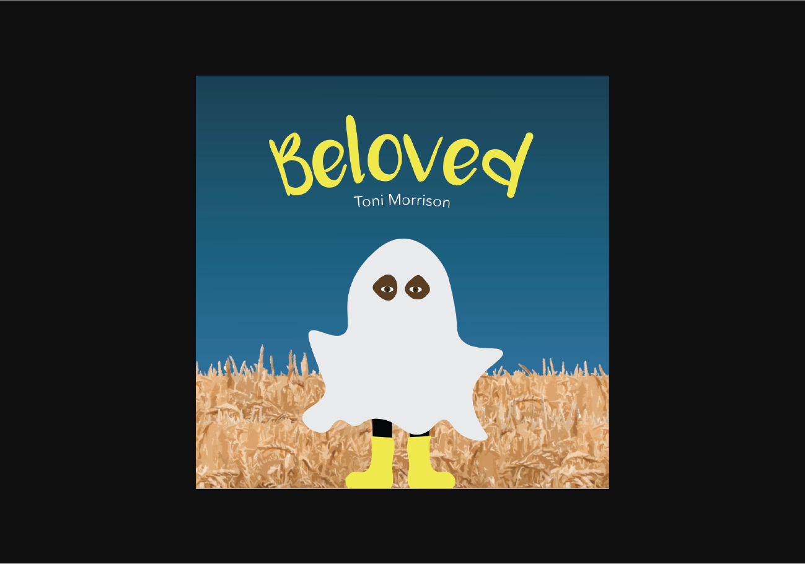
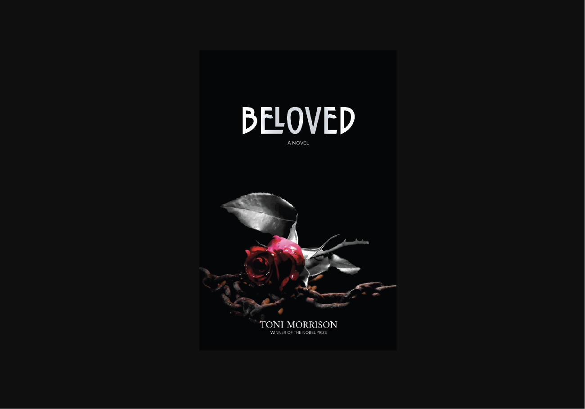

beloved
A novel written by Toni Morrison
3-in-1 book cover project / Graphic Design in Transition: Print and Digital Books

Figure 1. 3-in-1 book covers.
Beloved: 3-in-1 Book Covers
project description
Redesign the cover of an existing book for three different audiences and three distinct genres. The goal of this project is to explore different design decisions associated with book genres and audiences by developing concepts and typographic format for each of the book cover. Deliverable should also include a one-page rationale including original research.
Design Rationale
My main approach for the first cover was to target adults, mostly
African-Americans and older audiences who are interested in historical
literature. I graphically designed this cover to be simple, clean, and
aesthetically pleasing so readers can be proud and not afraid to show
off the book when reading it in public. The silhouette of the
African-American woman on the cover gives the audience a peak into
the novel, the hat helps set a sense of time/place while the rose
and blood gives a hint into the meaning behind “Beloved”. The serif
typeface chosen for the title was Benguiat Pro ITC to give the book
a high-end stylistic feel while maintaining the historical element
to the overall design. The title typeface was paired with a more
traditional serif to give balance to the overall composition of
the book.
My targeted audience for the second cover was graphically designed
for children under six years old. Keeping the main themes of the book,
I decided to design a ghost story. I drew an African-American kid
wearing a ghost costume standing in a hay field to represent a form
of farm life and give an element of slavery. My goal was to keep the
book more light and playful. I was able to achieve this by using a
spooky yet playful typeface combined with happy colour elements.
The colours red, pink, blue and yellow used in the three covers were
all selected because of its significants in the novel. Red was a
symbol of pain, evil and death, representing blood from the death of
the child. Pink is the last colour the mother remembers seeing on her
baby’s headstone, the colour was incorporated into the rose of the
first cover. Finally,blue and yellow were used to signify peace in
the novel.
My targeted audience for the final cover were teenagers and/or
high school readers. I based this design on the genre of magical
realism. My approach to this cover was inspired by the book series,
Twilight. I wanted it to be more imaged based, dark and stylish to
better fit into the theme of teenage novels. I chose an image of a
rose with chains to represent the significants of the female
characters and themes of slavery and freedom. The typeface I chose
for the title was Carilliantine Solid, since it gives character to
story but also a stylistic approach you often see a lot in similar
book genres. I used a serif typeface for the authors name to help
with type hierarchy and paired the two fonts with Avenir Next to keep
everything balance and legible.
Process
research
Cover #1 (Adults, Literature)
Cover #2 (Children)
Cover #3 (Teens, Magical Realism)
- More towards the African American audience
- Adults/Undergraduates (18+), not afraid to read in public
- Leaned towards a historical literature book
- Font Style: Serif, Cursive type
- More towards the African American audience
Cover #2 (Children)
- Aimed more towards Teens/Highschool readers
- Bold, literal and image heavy but still clean
- More of a magical realism approach
- Twilight inspirations (dark + red)
- Font Style: Serif/Fancy & San-Serif
Cover #3 (Teens, Magical Realism)
- Aimed towards a younger audience, children under 6 years old
- Ghost story narrative book
- Use Blue/Yellow for a more playful element
- Picture style book with little text
- Big and legible text
- Drawing/Cartoon Artwork
Design Process
sketches

Figure 2. Rough ideation hand sketches for the first two book covers (Adult and Teen)
digital mockups

Figure 3. Initial digital sketches for the three book covers based on the hand sketches

Figure 4. Further refined digital sketches from the digial sketches
Graphic / Photo Log
The Braided Hair (image) was used in cover #1. The original image
of the braided hair has been image traced and modified. The length
and style of the braid has been edited. An effect was also added
to the stroke to create a more textured look. Other graphics on
the cover were all original drawn artworks.
Rose & Chain was used in cover #2. The original image has was
first photoshopped to remove watermarks and elements including
background, extra rose leaves, and other imperfections. The image
was then traced and modified to create the final look used in the
teen’s book cover.
The Hay Field (image) was used in cover #3. The original image has
been modified with a “cutout” style effect added onto the photo to
create a drawing or sketched like image. Image was used twice.
Other graphics on the cover were all original drawn artworks.

Figure 5. Final Cover 1

Figure 6. Final Cover 2

Figure 7. Final Cover 3
conclusion
The outcome of this graphic design publishing project was great, the covers were designed as intended in both the print and digital version. I believe the that the covers can still be further refined to produce an even better outcome especially covers 2 and 3. I believe I could better design a cover that would more suitably fit the intended audiences